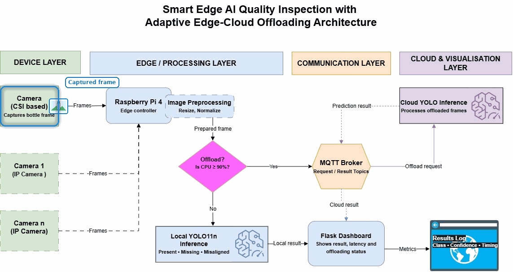
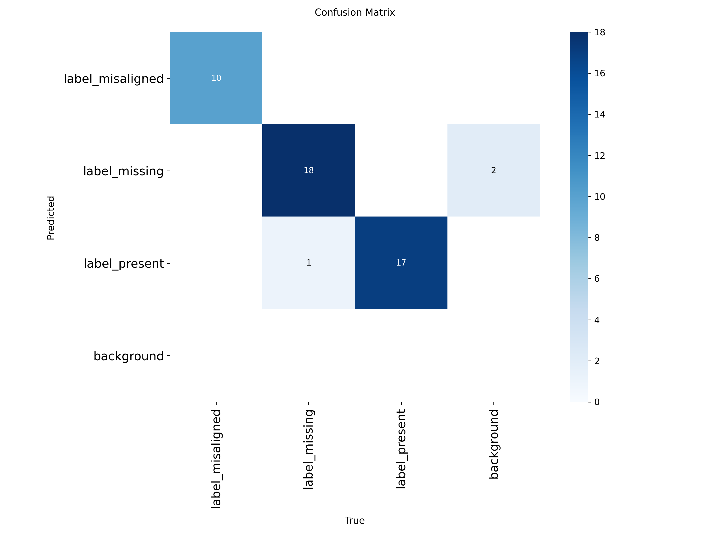

Frame the inspection challenge
- Define the industrial inspection problem and system requirements.
- Review Edge AI, MQTT and edge–cloud offloading.
- Connect technical work to quality and regulatory risk.
AI checks bottle labels locally and uses cloud support only when needed.
YOLO11n runs in NCNN format on Raspberry Pi 4, keeping image processing close to the camera and reducing cloud dependence.

